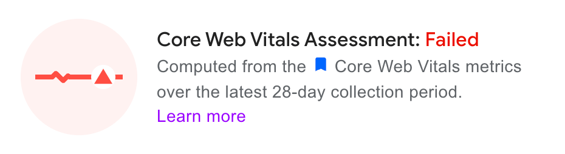

Optimising Core Web Vitals for SPAs
Simon Hearne
Web Performance Consultant
Hi Simon! I was wondering if you could help with...

Don't panic!
Core Web Vitals are your friend, not your foe
In this talk:
- What the Core Web Vitals are
- Why they matter (to you and Google)
- Why SPAs are special
- How to improve and monitor progress
Core Web Vitals?
Core Web Vitals?
Not just that Google thing
CWVs are proxies of
User Experience
- Largest Contentful Paint
- How fast it feels
- Cumulative Layout Shift
- How jumpy it is
- First Input Delay
- How interactive it feels
- Input to Next Paint
- How interactive it feels
Intermission:
Field vs. Lab
üß™ Lab
Controlled tests of a single page / interaction
üåç Field
Real data from real users out on interweb
Distributions & Percentiles
- CWV measured in the field, where data is noisy
- We use summary metrics to make sense of the noise
- 75th percentile - ¼ experiences are worse, ¾ better
Results will differ between tools
- Google Analytics + web_vitals.js üåç
- CrUX (PSI, GSC) üåçüß™
- Search Console üåç
- Real User Monitoring üåç
- WebPageTest üß™
Who uses what?
- Search Console for SEO folks
- CrUX & RUM for product
- PSI & WebPageTest for engineers
Why Core Web Vitals Matter
Search ❤️ CWV ❤️ Speed
SEO impact of Core Web Vitals
SEO is a ü•ï to create better UX
Don't expect massive ranking boosts
CWV are not pass / fail!
Assuming max ranking boost of 1, this page will get ~0.75
SEO impact of Core Web Vitals
A brief history of #WebPerf
- 2010 - Navigation Timing API
- 2017 - Paint Timing API
- 2019 - ALL THE APIS (in Chrome)
- LargestContentfulPaint API
- LayoutInstability API
- EventTiming API
CWV & SPAs
SPAs break a lot of stuff
SPAs break performance APIs
One load event per session, one FCP, one LCP...
LCP is only measured on the
first page load
CLS is measured throughout
the whole session
This breaks page-level attribution üò±
FID is only measured on the
first page load
In summary...
SPA websites are penalised by
ignoring mid-session navigations
except CLS - where the worst 1-5s window is captured
Optimising CWVs on SPAs
Largest Contentful Paint


Let's remove preloads


Where we got to (3G)
LCP top-tips
- SSR all landing pages
- Defer / reduce / remove hydration
- Increase hero element priority
- Only preload critical assets
- No cross-origin requests in critical path
- Reduce HTML size (<50kB compressed)
Image LCP?
- Ensure
<img src="">in HTML source - Ensure
loadingattribute is not"lazy" - Try
fetchpriority="high"attribute - Keep hero images <100kB
- Use modern formats
(AVIF>WEBP>JPEG>PNG>GIF)
Cumulative Layout Shift
First Input Delay
Bonus:
Input to Next Paint (INP)
In summary
CWVs are a useful tool, SEO impact is low, CrUX is free RUM data
Optimising for CWVs is (normally) quite simple - and will benefit business metrics
Become the "go-to" for CWV in your organisation to build personal brand
Chase one number at your peril
Links & Tools
- WebPerf.tools - my library of useful tools
- simonhearne.com/2022/core-web-vitals-on-spas/ - this talk, as a post